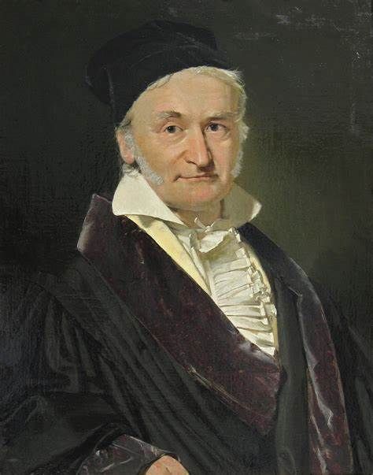

Integración Numérica
¿que es la integración numérica?
La integración numérica es una rama de las matemáticas que se ocupa de calcular el valor aproximado de integrales definidas, especialmente cuando no se pueden resolver analíticamente. Aquí te presento un resumen sobre su origen, conceptos y algunos de los autores más influyentes en su desarrollo.
La integración numérica se basa en la idea de aproximar el área bajo una curva utilizando métodos discretos. Algunos de los métodos más comunes incluyen:
- Método del Trapecio: Aproxima el área bajo la curva dividiendo el intervalo en trapecios.
- Regla de Simpson: Utiliza polinomios para aproximar la función en intervalos, siendo más precisa que el método del trapecio.
- Método de Monte Carlo: Utiliza técnicas de muestreo aleatorio para estimar el valor de la integral.
autores
- Isaac Newton y Gottfried Wilhelm Leibniz: Desarrollaron el teorema fundamental del cálculo, que establece la relación entre derivación e integración.

- Leonhard Euler: Hizo importantes contribuciones al cálculo y a la mejora de métodos numéricos en el siglo XVIII.
- Joseph-Louis Lagrange: Contribuyó al desarrollo de métodos de interpolación que son fundamentales en la integración numérica.
- Henri Lebesgue: Introdujo la integral de Lebesgue en el siglo XX, ampliando el concepto de integración más allá de las funciones continuas.

La integración numérica es una herramienta esencial en matemáticas aplicadas, utilizada en diversas disciplinas como la física, la ingeniería y la economía. Su evolución ha sido impulsada por la necesidad de resolver problemas complejos que no pueden abordarse mediante métodos analíticos.
Origen de la integracion numerica
Arquimedes
Matematico
Metodos
Métodos de Integración Numérica
Este método aproxima el área bajo una curva dividiendo el intervalo en trapecios. Es un método sencillo pero menos preciso que otros.
Este método utiliza un polinomio de segundo grado para aproximar la curva. Es más preciso que el método del trapecio.
donde \( c = \frac{a+b}{2} \).
Similar al método 1/3, pero utiliza un polinomio de tercer grado para una mayor precisión en ciertos casos.
donde los puntos \( a, b, c, d \) están equiespaciados.
Método de Romberg
El método de Romberg es una técnica numérica para calcular integrales definidas con alta precisión. Utiliza la extrapolación de Richardson para mejorar iterativamente las aproximaciones obtenidas con el método del trapecio. Es ideal para problemas donde se requiere una precisión elevada en los resultados.
Método del trapecio:
donde \( h = \frac{b-a}{n} \) y \( n \) es el número de intervalos.
Extrapolación de Romberg:
Esta fórmula se aplica en una tabla jerárquica para mejorar las aproximaciones de la integral.
Diferenciación Numérica
La diferenciación numérica es una técnica matemática utilizada para aproximar la derivada de una función en un punto específico. Es particularmente útil cuando la función es compleja, está definida mediante datos discretos, o no se puede derivar de forma analítica. Utilizando valores discretos, estos métodos permiten calcular derivadas con alta precisión, siendo una herramienta indispensable en matemáticas aplicadas.
La diferenciación numérica se basa en aproximar la derivada de una función usando valores discretos. Existen varios métodos, entre ellos:
- Diferenciación hacia adelante:
- Diferenciación hacia atrás:
- Diferenciación centrada:
donde \( h \) es un pequeño incremento.
Este método es más preciso ya que utiliza información de ambos lados del punto \( x \).
autores
- Isaac Newton y Gottfried Wilhelm Leibniz: Fundadores del cálculo, sentaron las bases para la diferenciación y la integración.
- Leonhard Euler: Realizó importantes aportes al desarrollo de métodos numéricos en el siglo XVIII.
- Joseph-Louis Lagrange: Su trabajo en interpolación y polinomios es clave para los métodos de diferenciación numérica.
- Carl Friedrich Gauss: Contribuyó a la precisión de los métodos numéricos con su trabajo en teoría de errores.

La diferenciación numérica es una herramienta crucial en matemáticas aplicadas, utilizada en campos como la ingeniería, la física y la economía. Su evolución ha sido impulsada por la necesidad de resolver problemas complejos que no pueden abordarse mediante métodos analíticos.
Origen de la diferenciación numerica
Isacc Newton y Gottfried Wilhelm Leibniz
Matematicos
Metodos
Método de Taylor (3 términos)
El método de Taylor es una técnica numérica para resolver ecuaciones diferenciales ordinarias. Al utilizar la expansión de Taylor, este método aproxima la solución de una función considerando términos derivados. Aquí se muestra la versión con tres términos, adecuada para problemas con intervalos pequeños.
Serie de Taylor (tres términos):
donde:
- \( h \): tamaño del paso.
- \( y(x) \): valor inicial.
- \( y'(x) \): primera derivada de \( y \).
- \( y''(x) \): segunda derivada de \( y \).
Las derivadas de orden superior se calculan a partir de la ecuación diferencial original, dependiendo del problema específico.
Método de Euler
El método de Euler es un método numérico sencillo pero eficaz para resolver ecuaciones diferenciales ordinarias. Se basa en aproximar la solución utilizando la pendiente de la derivada en cada paso. Aunque su precisión depende del tamaño del paso, es útil como introducción a métodos numéricos más avanzados.
Ecuación base del método de Euler:
donde:
- \( y_n \): valor actual de la solución.
- \( y_{n+1} \): valor estimado de la solución en el siguiente paso.
- \( h \): tamaño del paso.
- \( f(x_n, y_n) \): valor de la derivada en el punto \( (x_n, y_n) \).
Este método avanza paso a paso, utilizando un tamaño \( h \) fijo, para estimar valores sucesivos de la solución.
Método de Runge-Kutta (RK4)
El método de Runge-Kutta es una técnica numérica precisa y eficiente para resolver ecuaciones diferenciales ordinarias. El método de cuarto orden (\( RK4 \)) es especialmente popular debido a su equilibrio entre precisión y complejidad computacional.
Cálculo de incrementos intermedios:
Actualización del valor de \( y \):
Este método evalúa la pendiente en diferentes puntos dentro del intervalo para obtener una aproximación precisa de la solución en el siguiente paso.